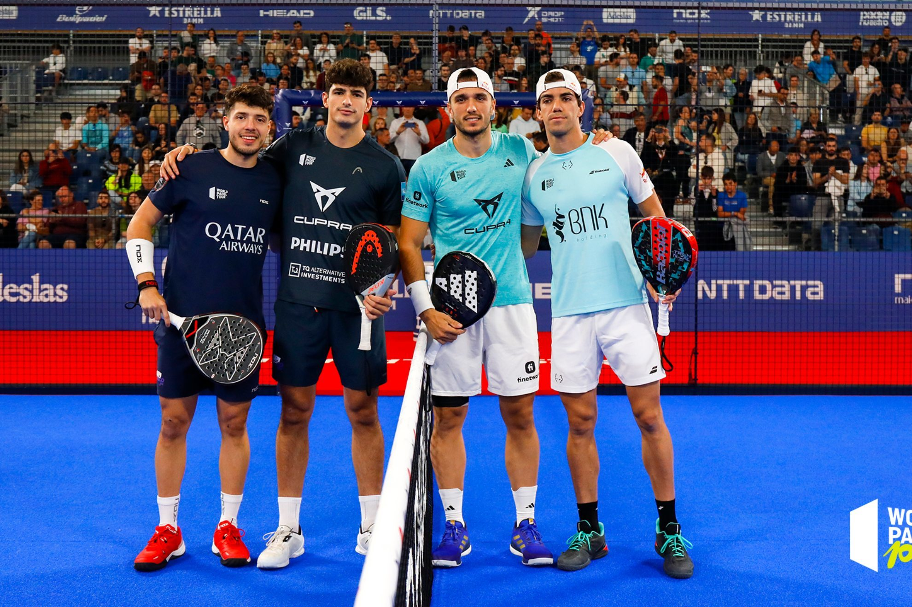
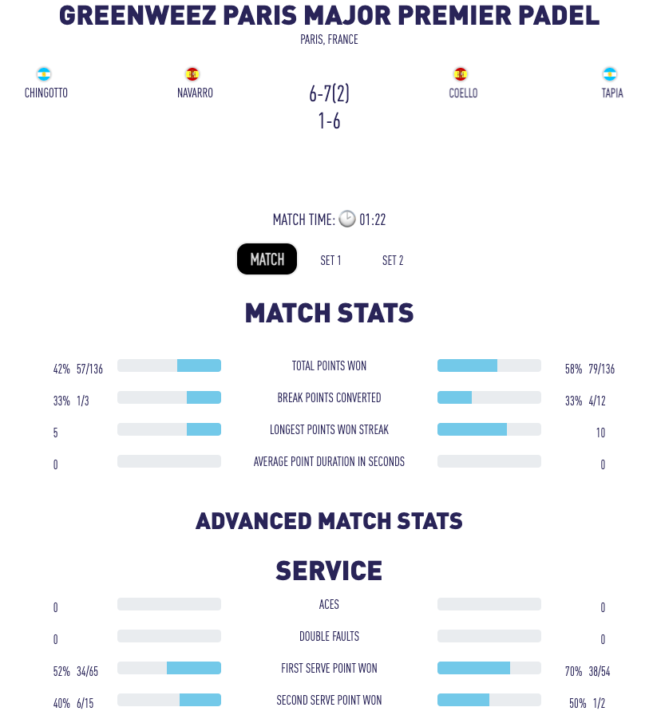

Motivation
The idea for this project began when I wanted to perform some analysis of padel data, knowing that the sport was growing rapidly. When I started searching for datasets, I quickly realized there weren’t many available, and the ones I found were mainly videos. So, I thought, “Okay, time to create a dataset myself—how hard can it be?” Spoiler alert: it was hard.
So, I started investigating how others had approached similar projects and came across a project called transfermarkt-datasets. The authors had done exactly what I wanted to do, but they were scraping data from the Transfermarkt website. They extracted the data using a package called scrapy, and I really liked the way they structured their project. So, I decided to learn a bit about the Scrapy library and try to scrape the padelfip website using it.
First Fase
First, I quickly looked into a tutorial to learn the basics of the library. I used this tutorial and probably watched just the first 30 minutes before I started experimenting on my own.
The first thing I tried to scrape was the player’s ranking. The page had three distinct sections:
- section_sliderHomeWrap: this section appeared to be only for the top 10 players.
- section_playerGridWrap: this section covered players ranked 11 to 20.
- player-table: this section included players ranked 21 to 40, with the option to load more players.
The second thing I noticed was that each player had their own URL leading to data about their participation in every tournament they played. So, the data for each player ended up looking something like this:
{
"ranking": "1",
"name": "Arturo Coello",
"country": "ESP",
"points": "13750",
"paired_with": "Agustin Tapia",
"position": "Right",
"birth_date": "08/03/2002",
"height": "1,90",
"place_of_birth": "Valladolid",
"residence": null,
"matches_played": "58",
"matches_won": "52",
"matches_lost": "6",
"consecutive_victories": "18",
"effectiveness": "89.66%",
"old_position": null,
"points_per_tournament": [
{
"tournament_name": "MALAGA PREMIER PADEL P1",
"category": "PREMIER PADEL P1",
"date": "06/07/2024",
"round_reached": " Winner",
"points": "1000"
},
{
"tournament_name": "GENOVA PREMIER PADEL P2",
"category": "PREMIER PADEL P2",
"date": "30/06/2024",
"round_reached": "Finals",
"points": "300"
},
.
.
.
.
.
{
"tournament_name": "Doha",
"category": "PREMIER PADEL MAJOR",
"date": "02/04/2022",
"round_reached": null,
"points": "360"
}
]
}Second Fase
The second thing i planned to scrape was the tournaments page. For each tournament, besides all the tournament information itself, it was important to also scrape the tournament’s URL of stats and the number of days the tournament was played. Here’s a quick look at how the scraped data turned out:
{
"year": 2024,
"month": "Septiembre",
"event_name": "ROTTERDAM PREMIER PADEL P1",
"event_place": "Rotterdam - Netherlands",
"event_date": "07/09/2024\n-15/09/2024",
"gender": "Female/Male",
"qualification_date": [],
"prize_money": "€ 470.000",
"club_info": null,
"days_played": null,
"url": null
},
.
.
.
.
.
{
"year": 2023,
"month": "Septiembre",
"event_name": "PARIS MAJOR PREMIER PADEL",
"event_place": "Paris - France",
"event_date": "03/09/2023\n-10/09/2023",
"gender": "Female/Male",
"qualification_date": [],
"prize_money": "EUR 525000",
"club_info": null,
"days_played": 8,
"url": "https://widget.matchscorerlive.com/screen/resultsbyday/FIP-2023-3603/8?t=tol"
}Third Fase
The last part was the tricky one: scraping the game stats for every tournament. Each tournament had a different URL where the statistics for every match played during the tournament were listed. To run the gamespider, I assumed that this URL would be passed as an argument along with the days_played. Here’s a quick look at how the data turned out:
[
{
"tournament": "LOTTO BRUSSELS PREMIER PADEL P2 PRESENTED BY BELFIUS",
"date": "Sun, Apr 28",
"court": "CENTRAL COURT",
"gender": "Women",
"round": "F",
"time": "01:51",
"winner_player_name": "D. Brea Senesi B. Gonzalez Fernandez",
"loser_player_name": "G. Triay Pons C. Fernandez Sanchez",
"left_players": [
"TRIAY PONS",
"FERNANDEZ SANCHEZ"
],
"right_players": [
"BREA SENESI",
"GONZALEZ FERNANDEZ"
],
"scores": [
"4-6",
"4-6"
],
"left_match_pctg_total_points_won": "47%",
"left_match_pctg_numbers_total_points_won": "61/130",
"right_match_pctg_total_points_won": "53%",
"right_match_pctg_numbers_total_points_won": "69/130",
"left_match_pctg_break_points_converted": "29%",
"left_match_pctg_numbers_break_points_converted": "2/7",
"right_match_pctg_break_points_converted": "33%",
"right_match_pctg_numbers_break_points_converted": "4/12",
"left_match_pctg_first_serve_point_won": "57%",
"left_match_pctg_numbers_first_serve_point_won": "38/67",
"right_match_pctg_first_serve_point_won": "68%",
"right_match_pctg_numbers_first_serve_point_won": "32/47",
"left_match_pctg_second_serve_point_won": "0%",
"left_match_pctg_numbers_second_serve_point_won": "0/4",
"right_match_pctg_second_serve_point_won": "33%",
"right_match_pctg_numbers_second_serve_point_won": "4/12",
"left_match_pctg_first_return_points_won": "32%",
"left_match_pctg_numbers_first_return_points_won": "15/47",
"right_match_pctg_first_return_points_won": "43%",
"right_match_pctg_numbers_first_return_points_won": "29/67",
"left_match_pctg_second_return_points": "67%",
"left_match_pctg_numbers_second_return_points": "8/12",
"right_match_pctg_second_return_points": "100%",
"right_match_pctg_numbers_second_return_points": "4/4",
"left_match_pctg_total_serve_points_won": "54%",
"left_match_pctg_numbers_total_serve_points_won": "38/71",
"right_match_pctg_total_serve_points_won": "61%",
"right_match_pctg_numbers_total_serve_points_won": "36/59",
"left_match_pctg_total_return_points_won": "39%",
"left_match_pctg_numbers_total_return_points_won": "23/59",
"right_match_pctg_total_return_points_won": "46%",
"right_match_pctg_numbers_total_return_points_won": "33/71",
"left_1_set_pctg_total_points_won": "47%",
"left_1_set_pctg_numbers_total_points_won": "34/73",
"right_1_set_pctg_total_points_won": "53%",
"right_1_set_pctg_numbers_total_points_won": "39/73",
"left_1_set_pctg_break_points_converted": "50%",
"left_1_set_pctg_numbers_break_points_converted": "1/2",
"right_1_set_pctg_break_points_converted": "22%",
"right_1_set_pctg_numbers_break_points_converted": "2/9",
"left_1_set_pctg_first_serve_point_won": "59%",
"left_1_set_pctg_numbers_first_serve_point_won": "24/41",
"right_1_set_pctg_first_serve_point_won": "71%",
"right_1_set_pctg_numbers_first_serve_point_won": "15/21",
"left_1_set_pctg_second_serve_point_won": "0%",
"left_1_set_pctg_numbers_second_serve_point_won": "0/4",
"right_1_set_pctg_second_serve_point_won": "43%",
"right_1_set_pctg_numbers_second_serve_point_won": "3/7",
"left_1_set_pctg_first_return_points_won": "29%",
"left_1_set_pctg_numbers_first_return_points_won": "6/21",
"right_1_set_pctg_first_return_points_won": "41%",
"right_1_set_pctg_numbers_first_return_points_won": "17/41",
"left_1_set_pctg_second_return_points": "57%",
"left_1_set_pctg_numbers_second_return_points": "4/7",
"right_1_set_pctg_second_return_points": "100%",
"right_1_set_pctg_numbers_second_return_points": "4/4",
"left_1_set_pctg_total_serve_points_won": "53%",
"left_1_set_pctg_numbers_total_serve_points_won": "24/45",
"right_1_set_pctg_total_serve_points_won": "64%",
"right_1_set_pctg_numbers_total_serve_points_won": "18/28",
"left_1_set_pctg_total_return_points_won": "36%",
"left_1_set_pctg_numbers_total_return_points_won": "10/28",
"right_1_set_pctg_total_return_points_won": "47%",
"right_1_set_pctg_numbers_total_return_points_won": "21/45",
"left_2_set_pctg_total_points_won": "47%",
"left_2_set_pctg_numbers_total_points_won": "27/57",
"right_2_set_pctg_total_points_won": "53%",
"right_2_set_pctg_numbers_total_points_won": "30/57",
"left_2_set_pctg_break_points_converted": "20%",
"left_2_set_pctg_numbers_break_points_converted": "1/5",
"right_2_set_pctg_break_points_converted": "67%",
"right_2_set_pctg_numbers_break_points_converted": "2/3",
"left_2_set_pctg_first_serve_point_won": "54%",
"left_2_set_pctg_numbers_first_serve_point_won": "14/26",
"right_2_set_pctg_first_serve_point_won": "65%",
"right_2_set_pctg_numbers_first_serve_point_won": "17/26",
"left_2_set_pctg_second_serve_point_won": "0%",
"left_2_set_pctg_numbers_second_serve_point_won": "0/0",
"right_2_set_pctg_second_serve_point_won": "20%",
"right_2_set_pctg_numbers_second_serve_point_won": "1/5",
"left_2_set_pctg_first_return_points_won": "35%",
"left_2_set_pctg_numbers_first_return_points_won": "9/26",
"right_2_set_pctg_first_return_points_won": "46%",
"right_2_set_pctg_numbers_first_return_points_won": "12/26",
"left_2_set_pctg_second_return_points": "80%",
"left_2_set_pctg_numbers_second_return_points": "4/5",
"right_2_set_pctg_second_return_points": "0%",
"right_2_set_pctg_numbers_second_return_points": "0/0",
"left_2_set_pctg_total_serve_points_won": "54%",
"left_2_set_pctg_numbers_total_serve_points_won": "14/26",
"right_2_set_pctg_total_serve_points_won": "58%",
"right_2_set_pctg_numbers_total_serve_points_won": "18/31",
"left_2_set_pctg_total_return_points_won": "42%",
"left_2_set_pctg_numbers_total_return_points_won": "13/31",
"right_2_set_pctg_total_return_points_won": "46%",
"right_2_set_pctg_numbers_total_return_points_won": "12/26",
"left_match_longest_points_won_streak": "6",
"right_match_longest_points_won_streak": "8",
"left_match_average_point_duration_in_seconds": "0",
"right_match_average_point_duration_in_seconds": "0",
"left_match_aces": "0",
"right_match_aces": "0",
"left_match_double_faults": "0",
"right_match_double_faults": "0",
"left_match_services_games_played": "10",
"right_match_services_games_played": "10",
"left_match_return_games_played": "10",
"right_match_return_games_played": "10",
"left_1_set_longest_points_won_streak": "6",
"right_1_set_longest_points_won_streak": "5",
"left_1_set_average_point_duration_in_seconds": "0",
"right_1_set_average_point_duration_in_seconds": "0",
"left_1_set_aces": "0",
"right_1_set_aces": "0",
"left_1_set_double_faults": "0",
"right_1_set_double_faults": "0",
"left_1_set_services_games_played": "5",
"right_1_set_services_games_played": "5",
"left_1_set_return_games_played": "5",
"right_1_set_return_games_played": "5",
"left_2_set_longest_points_won_streak": "5",
"right_2_set_longest_points_won_streak": "4",
"left_2_set_average_point_duration_in_seconds": "0",
"right_2_set_average_point_duration_in_seconds": "0",
"left_2_set_aces": "0",
"right_2_set_aces": "0",
"left_2_set_double_faults": "0",
"right_2_set_double_faults": "0",
"left_2_set_services_games_played": "5",
"right_2_set_services_games_played": "5",
"left_2_set_return_games_played": "5",
"right_2_set_return_games_played": "5"
}
]So… that’s a lot of data. A quick explanation: the stats page displays one pair of players on the left and the opposing pair on the right, something like this:

So the scores, the couples and all the associates statistica have a prefix left_ or right_ depending for which couple they belong.
Improvements Needed
There are a few things I still need to work on:
- The
playerspidercurrently only scrapes the men’s ranking, but it should be fairly straightforward to add the logic to scrape both the men’s and women’s rankings. - There’s an issue with the basic data in
tournamentspider, specifically with thequalification_data. Some pages have this information in a box labeled “Cualificación,” while others include it in the main draw box labeled “Cuadro.” I’ll need to adapt the code to handle this variation.
What’s Next?
My next plan is to create a project called padel-dataset that will extract all the data, prepare it for publication, and then either upload it to a Kaggle dataset or store it in an S3 bucket—I haven’t decided yet.